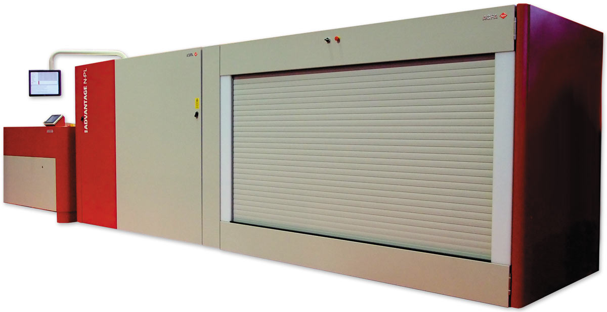
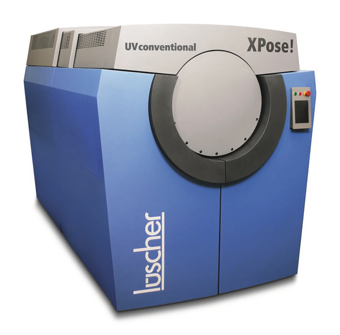

Старт коммерческого распространения в широком ассортименте технологии Computer to Plate был дан в конце 1993 года на международной выставке IPEX93. По своей сути технология CtP представляет собой управляемый компьютером процесс изготовления печатных форм методом прямой поэлементной записи изображения на формный материал.
Основными достоинствами инсталлируемого оборудования CtP являются:
В состав комплекса оборудования, использующего технологию CtP, входит:
Технологии, используемые в системах CtP, можно разделить на две основные группы:
1. Нанесение на олеофобный формный материал, обладающий олеофильным свойством, посредством:
На базе этой технологии функционируют недорогие системы СtP, предназначенные в основном для рынка однокрасочной печати. Печатная форма создается на бумажной основе или полимерной пленке.
2. Выборочное удаление с поверхности многослойного формного материала олеофильного, в редких случаях — олеофобного слоя с помощью цифровых экспонирующих установок:
На базе этой технологии функционируют более дорогие системы CtP, предназначенные для изготовления печатных форм средней и высокой тиражестойкости. Печатная форма создается на металлической основе или полимерной пленке.
Экспонирующие устройства, использующие лазеры, могут иметь три основных типа построения:
Преимущества первых: высокая производительность; высокое качество изготавливаемых печатных форм; невысокая частота вращения барабана, благодаря наличию многочисленных лазерных диодов; возможность экспонирования больших форматов печатных форм. К возможным недостаткам можно отнести: сложность и высокую цену записывающих головок; ограниченность возможности изменения разрешающей способности устройства записи; трудоемкость установки устройств для перфорирования печатных форм; необходимость использования систем автоматической балансировки, усложняющих конструкцию; стоимость устройства выше на 2030%, чем устройства, выполненные по технологии «внутренний барабан».
Преимущества устройств второго типа построения: достаточность одного источника излучения, благодаря чему достигается высокая точность записи; простота фокусировки; возможность плавного изменения разрешения записи; простота замены источников излучения; легкость установки перфорирующего устройства для штифтовой приводки. К возможным недостаткам можно отнести дорогостоящую оптику для генерирования резкой точки.
Наконец, преимуществом планшетного построения является быстрота экспонирования печатной формы, что привлекательно для газетного производства, не требующего высоких разрешений получаемого изображения. К недостаткам можно отнести невозможность его использования в области коммерческой печати.
Хотелось бы отметить, что названия, классифицирующие устройства экспонирования и технологии CtP, основываются на используемом источнике для экспонирования печатной формы:
Инфракрасная термическая лазерная технология, появившаяся уже более десяти лет назад, быстро заняла в мире доминирующую позицию. Доля CtPустройств, использующих эту технологию, продолжает расти и составляет ориентировочно около 70% по числу инсталлированных CtPустройств в мире.
Из контекста понятно, что CtPустройства, работающие с использованием инфракрасной термической лазерной технологии:
Для экспонирования используются термические пластины, чувствительные к инфракрасному излучению, которые могут быть как позитивными (позитивный светочувствительный слой), так и негативными (негативный светочувствительный слой), а кроме того — требующими и не требующими химической обработки после экспонирования. Тиражестойкость этих пластин варьируется в промежутке от 100 000 до 300 000 оттисков без применения термообжига и 1 000 000 — с применением. Стоимость пластин зависит от их типа, и более дорогими являются те, которые не требуют химического проявления. На рынке печатных форм известно более десяти фирм — производителей пластин для этой технологии.
К преимуществам термических пластин можно отнести следующие характеристики:
К недостаткам термических пластин можно отнести следующие особенности:
Развитие фиолетовой технологии началось около 25 лет назад. В процессе развития технология разделилась на три направления, а именно — серебряная фиолетовая и фотополимерная фиолетовая лазерные технологии, а также фиолетовая технология для аналоговых пластин. Этому послужило сравнительно недавнее появление фиолетовых лазеров мощностью 5060 мВт, заменивших зеленые лазеры (рис. 1).

Рис. 1. Газетная CtP-система Agfa Advantage N-PL с фиолетовым лазером
В серебряной фиолетовой лазерной технологии, являющейся прародительницей фиолетовой технологии, сначала использовались фиолетовые лазеры малой мощности (5 мВт), а в настоящее время мощность используемых лазеров (5060 мВт) ослабляется с помощью светофильтров. Это дает возможность использовать одно CtPустройство как для серебряной фиолетовой лазерной технологии, так и для фотополимерной фиолетовой лазерной технологии, посредством удаления светофильтра.
Итак, фиолетовые CtPустройства:
Для экспонирования в серебряной фиолетовой лазерной технологии применяются серебросодержащие пластины — как позитивные, так и негативные. Тиражестойкость таких пластин составляет 350 000 оттисков. К преимуществам серебросодержащих пластин можно отнести следующие характеристики:
К недостаткам серебросодержащих пластин можно отнести следующие особенности:
В свою очередь, для экспонирования в фотополимерной фиолетовой лазерной технологии применяются фотополимерные пластины, в основном негативные, а также требующие и не требующие химической обработки после экспонирования. Тиражестойкость этих пластин составляет 250 000 оттисков и более 500 000 оттисков после термообжига. На сегодня рынок пластин для этой технологии представлен более чем пятью крупными фирмами — производителями пластин.
К преимуществам фотополимерных пластин можно отнести следующие характеристики:
К недостаткам фотополимерных пластин можно отнести следующие особенности:
Хотелось бы отметить еще один важный исторический момент в развитии фиолетовой технологии. Во второй половине 2006 года швейцарская компания неожиданно для всех объявила о выпуске на базе собственных термальных CtPустройств революционно нового устройства, использующего более мощный фиолетовый лазер мощностью 200 мВт (в будущем заявлено использование фиолетового лазера мощностью 350 мВт) для экспонирования традиционных пластин. Данная модель CtPустройства получила название Luescher XPose! UV conventional (рис. 2). Эту технологию можно классифицировать как фиолетовую лазерную технологию для аналоговых пластин.

Рис. 2. Luescher XPose! UV conventional
Итак, в CtPустройствах для экспонирования традиционных (аналоговых) пластин, естественно, используются традиционные монометаллические пластины, то есть в фиолетовой лазерной и фиолетовой технологиях для аналоговых пластин. Чаще всего используются позитивные пластины, их тиражестойкость — 150 000200 000 оттисков, а после термообжига тиражестойкость составляет 1 000 000 оттисков.
Количество фирм — производителей традиционных пластин велико, и тенденции к сокращению не наблюдается. К преимуществам традиционных пластин можно отнести следующие характеристики:
К недостаткам традиционных пластин можно отнести то, что экспонирование и обработка пластин возможна только в полностью автоматических моделях CtPустройств, а для других комплектаций необходимо неактиничное освещение (желтый свет).